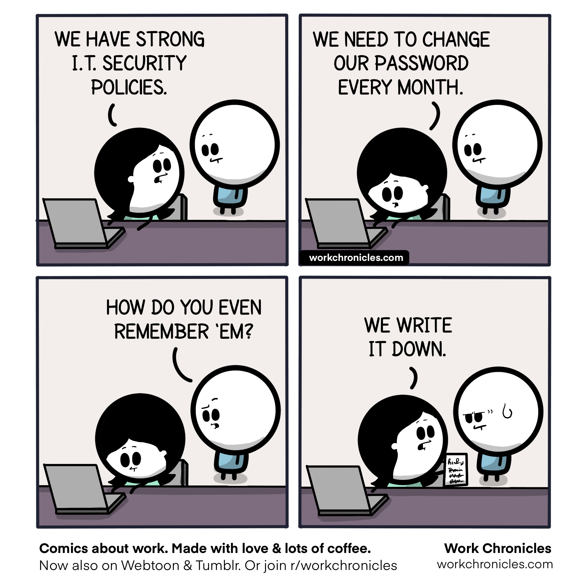

Understand the Importance of Strong Password Practices
Strong passwords are important to have to protect against people accessing your account. It's easier for attackers to access your account with a weak password, attackers will attempt common passwords, personal information, and use tools to get access. Using strong passwords and a unique one for each account will make it much harder for an attacker to gain access.
| Category | Threat | Description | Prevention Method |
|---|---|---|---|
| Weak Password Practices | Easy-to-Guess passwords | Passwords like 123456 are very easy to guess and can be hacked very quick | Having a password that is unique and uncommon that is 12 - 14 characters with special characters |
| Reused Passwords | Passwords that are used multiple times on different accounts | Have a unique password on every account | |
| Password Manager | Storing Passwords Insecurely | Writting down passwords in unsafe places like in notes | Use a password manager that is known to be safe |
| Not changing passwords regularly | Passwords that are kept the same forever have a higher chance of being exposed | Make sure password is being changed often and not written somewhere where anyone can find it |
